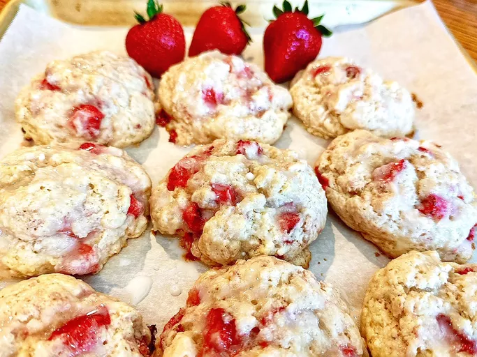

Introducció
Aquestes galetes dolces de maduixa són un gran esmorzar per anar o un bon final per al sopar. Feu-los una mica més dolços i ruixeu-los amb l'esmalt opcional.

Ingredients
- 2/3 tasses de farina
- 1/4 tassa de sucre
- 1/4 de cullerada de sal
- 1 cullerada de llevat en pols
- 3/4 tassa de mantega congelada
- 1 tassa de maduixes tallades a daus
- 2/3 tasses de llet de mantega
- Una cullerada d'esencia de vainilla
- Una cullerada de nata espesa
- 2 cullerades de sucre glass
Procediment
- Preescalfeu el forn a 425 graus F (220 graus C). Folreu una safata de forn amb paper de forn.
- Combina la farina, la 1/4 tassa de sucre, la pols de coure i la sal en un bol gran. Ratlleu la mantega congelada en ingredients secs. Barrejar suaument. Afegiu les maduixes i barregeu fins que les maduixes estiguin cobertes amb la barreja de farina.
- Combina la mantega i la vainilla. Aboqueu-ho a la barreja de maduixes i remeneu fins que amb prou feines es combinen. No barregis massa o les galetes seran dures.
- Utilitzeu una cullera de gelat per treure les galetes a la safata de forn preparada. Pinteu la part superior de les galetes amb nata espessa i empolseu amb les 2 cullerades de sucre.
- Coure al forn preescalfat fins que els fons estiguin daurats, de 15 a 17 minuts. Deixeu reposar 5 minuts. Retireu les galetes i refredeu-les completament sobre una reixeta.
- Batre el sucre en pols i la llet en una tassa. Ruixeu les galetes.